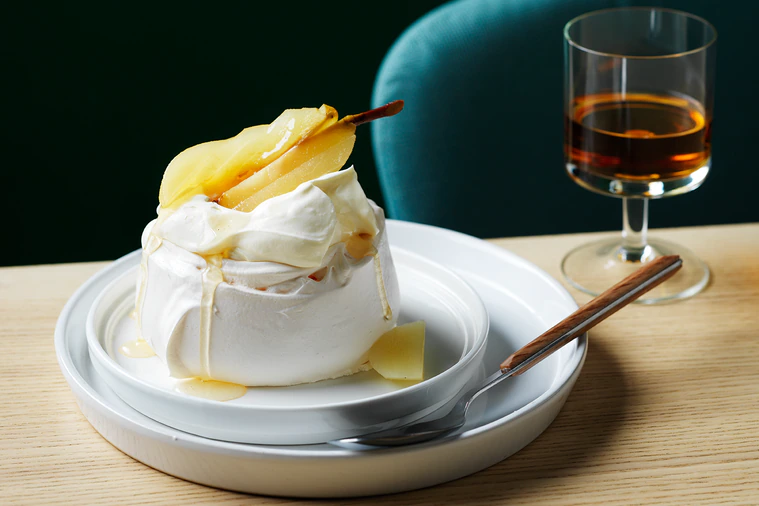

Poached pear vacherin (meringue)
- 7 egg whites
- 2 tsp white vinegar
- 350g caster sugar
- 50g Pecorino Romano cheese, grated
- 1 tbs cornflour, sifted
- Salt to taste
- Bring a large pot of salted water to a boil. Cook the spaghetti according to the package instructions until al dente.
- In a separate pan, cook the pancetta or guanciale until crispy.
- In a bowl, whisk together the eggs, grated Pecorino Romano cheese, and black pepper.
- Drain the cooked spaghetti and add it to the pan with the pancetta/guanciale. Toss to combine.
- Remove the pan from heat and quickly stir in the egg mixture. The residual heat will cook the eggs without scrambling them.
- Season with salt and additional black pepper if needed. Serve immediately.